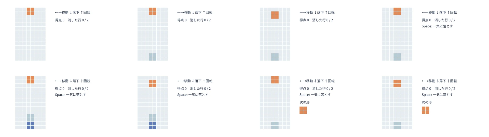
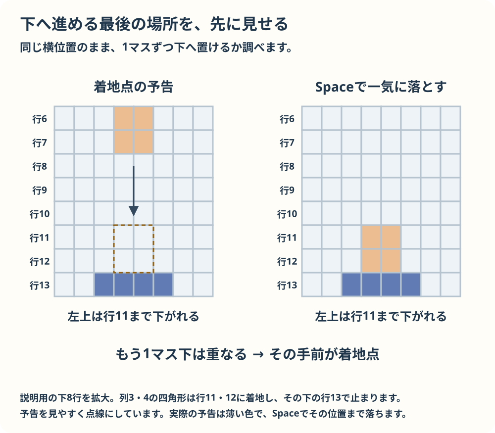

落ちものパズルの発展
始める前に
基本編の完成版から始めます。ZIPを展開してできたフォルダーでindex.htmlを開きます。ZIPには基本編の3ファイルが入っています。
WindowsでZIPを展開する（動画）
各段階の変更を上から順に加え、保存したら index.html を開くか再読み込みします。
ステップ 1：着地点を予告する
このステップの見本を図で見る

このステップの見本
この行を足す前 変わったコードの一例（script.js）
let y = this.piece.y;
見本で確かめること
薄い形が図形を落としたときの位置に表示されます。
目標
操作と予告を追加します。
作業を順に進め、確認欄で保存して動作を確かめます。
書く場所と置き換えるコード
着地点を調べる
Game の rotate() の後に追加します。
目印
if (this.board.fits(this.piece, this.piece.x, this.piece.y, shape)) this.piece.shape = shape;
}追加するコード
landingY() {
let y = this.piece.y;
while (this.board.fits(this.piece, this.piece.x, y + 1)) y++;
return y;
}現在の縦位置から、1マス下に置ける間 y を増やします。下へ動けなくなった位置を返します。
着地点の影を描く
draw() の盤面を描く行の後に追加します。
目印
game.board.draw();追加するコード
if (game.state === "playing") game.piece.draw(game.landingY(), "#b7cbd4");プレイ中に、着地点へ淡い色で図形を描きます。その後に現在の図形を重ねます。
保存後の確認
保存してゲーム画面を更新する（動画）
index.html を再読み込みします。薄い形が図形を落としたときの位置に表示されます。 この段階の見本を開く
小さな練習
表示の色を変えて比べます。 練習後はコードを元に戻してください。
ステップ 2：一気に落とす
このステップの見本を図で見る
このステップの見本
この行を足す前 変わったコードの一例（script.js）
else if (event.key === " ") { while (game.move(0, 1)) {} }
見本で確かめること
Spaceで図形が一気に落ちて固定されます。
目標
操作と予告を追加します。
作業を順に進め、確認欄で保存して動作を確かめます。
書く場所と置き換えるコード
一気に落とす操作を表示する
draw() の得点と行数の表示の後に追加します。
目印
ctx.fillText("得点 " + game.score + " 消した行 " + game.lines + " / 2", 360, 140);追加するコード
ctx.fillText("Space: 一気に落とす", 360, 180);Spaceで一気に落とせることを表示します。
Spaceで着地まで動かす
キー処理の上キーの行の後に追加します。
目印
else if (event.key === "ArrowUp") game.rotate();追加するコード
else if (event.key === " ") { while (game.move(0, 1)) {} }Spaceの event.key は半角スペースです。move(0, 1) が真の間は下へ動かし、動けなくなったら固定の処理で止まります。

今の場所からまっすぐ落とすと、どこで止まるでしょう。うすいピースが着地点を教えます。Spaceを押すと、その場所まで一気に落ちます。
下8行を拡大した模式図。実画面の薄い塗りを破線に置換。床のブロックに重なる1行手前を着地点として示す。
保存後の確認
Spaceで図形が一気に落ちて固定されます。 この段階の見本を開く
小さな練習
表示の色を変えて比べます。 練習後はコードを元に戻してください。
ステップ 3：次の形を予告する
このステップの見本を図で見る
このステップの見本
this.piece = new Piece(shapes[Math.floor(Math.random() * shapes.length)]);
変わったコードの一例（script.js）this.piece = new Piece(this.nextShape);
見本で確かめること
次の形を見てから落とし、その形が次に現れることを確かめます。
目標
操作と予告を追加します。
作業を順に進め、確認欄で保存して動作を確かめます。
書く場所と置き換えるコード
次の形を覚える
Game の constructor で状態を設定する行の下に追加します。
目印
this.state = "playing"; this.counter = 0; this.score = 0; this.lines = 0;追加するコード
this.nextShape = shapes[Math.floor(Math.random() * shapes.length)];Math.random() と Math.floor() で候補の番号を選び、次に使う形を覚えます。最初に操作する形は引き続き shapes[0] です。
覚えた形を出して次を選ぶ
move() の次の図形を作る行を置き換えます。
置き換える範囲
this.piece = new Piece(shapes[Math.floor(Math.random() * shapes.length)]);置き換えるコード
this.piece = new Piece(this.nextShape);
this.nextShape = shapes[Math.floor(Math.random() * shapes.length)];覚えていた形を新しい図形に使い、さらにその次の形を選びます。
次の形を表示する
draw() のSpaceの案内の後に追加します。
目印
ctx.fillText("Space: 一気に落とす", 360, 180);追加するコード
ctx.fillText("次の形", 360, 230);
ctx.fillStyle = "#e28c59";
game.nextShape.forEach((row, y) => row.forEach((value, x) => { if (value) ctx.fillRect(360 + x * 25, 250 + y * 25, 23, 23); }));
ctx.fillStyle = "#26334a";次の形の行と列を順に調べ、値が1のマスを描きます。横360・縦250から25ずつずらし、大きさ23の四角にします。最後に文字の色を戻します。
保存後の確認
次の形を見てから落とし、その形が次に現れることを確かめます。 この段階の見本を開く
小さな練習
表示の色を変えて比べます。 練習後はコードを元に戻してください。